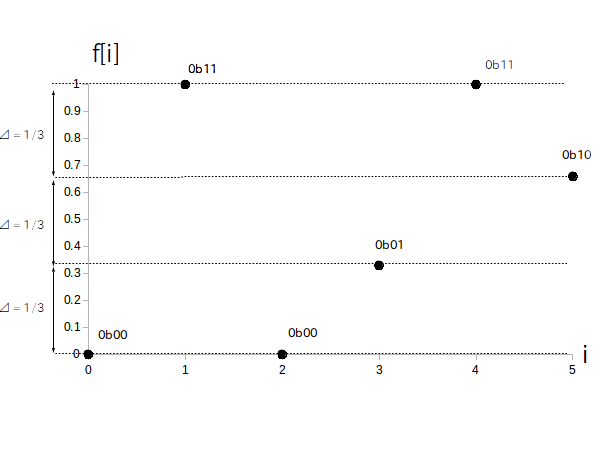
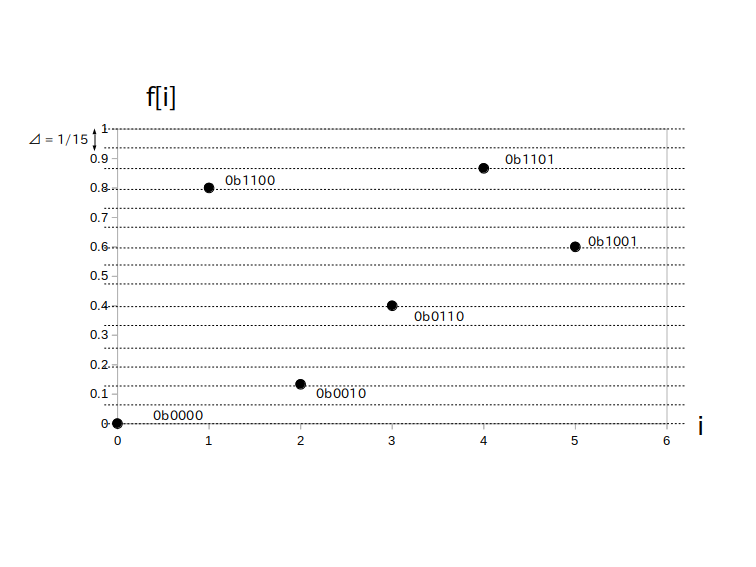

「量子化ビット数」 $q$ [bit] とは線形量子化した後のディジタルデータひとつ分を何 bit で記録するかを表す数字で、具体的には $f[i]$ の値域を均等に $2^q-1$ 分割することを意味します。
線形量子化ビット数 $q$ [bit] と対応する値域の分割数及び C言語等における整数型の関係を示した表を以下に示します。
| 線形量子化ビット数 $q$ [bit] | 値域の分割数 | 整数型変数 |
|---|---|---|
| 1 bit | $2^1-1= 1$ 等分 | (unsigned) char型 ※ 8 bit 変数なので 1 bitの信号を 8 個格納できます |
| 2 bit | $2^2-1= 3$ 等分 | (unsigned) char型 ※ 8 bit 変数なので 2 bitの信号を 4 個格納できます |
| 4 bit | $2^4-1= 15$ 等分 | (unsigned) char型 ※ 8 bit 変数なので 4 bitの信号を 2 個格納できます |
| 8 bit | $2^8-1= 255$ 等分 | (unsigned) char 型 |
| 16 bit | $2^{16}-1= 65535$ 等分 | (unsigned) short 型 |
| 24 bit | $2^{24}-1= 16777215$ 等分 | (unsigned) char型 x 3 個 ※ 24 bit の信号なので格納するためには 8 bit 変数が 3 個必要です |
| 32 bit | $2^{32} -1= 4294967295$ 等分 | (unsigned) int 型 |
例えば前ページの図 1 の信号を $q$ = 2 bit で量子化した例を以下に示します。
$f[i]$ の値域は [0, 1]で、それが $2^2-1 = 3$ 等分されるので、信号値は 0 か 1/3 か 2/3 か 1 のどれかの値に量子化される。
ここで信号値 0 のデータを二進数 0b00 (10進数の0)、1/3 のデータを 0b01 (10進数の1)、2/3 のデータを 0b10(10進数の2)、1 のデータを 0b11 (10進数の3) で記録する事にすると、量子化後の信号は二進数 0b 00 11 00 01 11 10 で表される。
また $q$ = 4 bit で量子化すると次の様になります。
$f[i]$ の値域は [0, 1]で、それが $2^4-1 = 15$ 等分されるので、信号値は 0、1/15、・・・、14/15、1 のどれかの値に量子化される。
ここで信号値 0 のデータを二進数 0b0000(10進数の0)、1/15 のデータを 0b0001(10進数の1)、・・・、14/15 のデータを 0b1110(10進数の14)、1 のデータを 0b1111 (10進数の15) で記録する事にすると、量子化後の信号は二進数 0b 0000 1100 0010 0110 1101 1001 で表される。
上の例から分かる様に、量子化ビット数を増やすと量子化誤差は減りますがデータサイズが大きくなります。